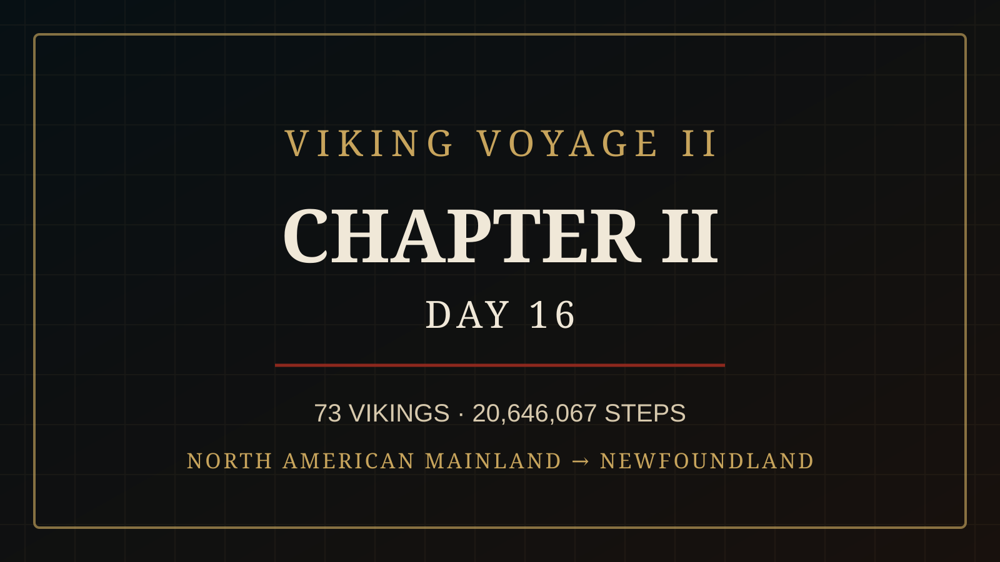

CHAPTER II HAS BEGUN
Real activity in Pacer moves the ship. Chapter I is frozen behind us; the fleet is now sailing south toward Newfoundland.


One raven watches the southern course. The other is still somewhere beyond the horizon.
CHAPTER II HAS BEGUN
73 Vikings have carried the fleet to 20,646,067 steps — approximately 13,419.9 km since Greenland.
Chapter I is now behind us and permanently written into the voyage. Since reaching the North American mainland, the crew has added 1,490,589 steps — nearly 969 km.
The fleet has completed 27.53% of the full 75,000,000-step voyage. 54,353,933 steps — approximately 35,330.1 km — remain before Florida.
The bow has turned south. The next destination is Newfoundland.
73 VIKINGS. ONE CREW. ONE SHIP.
CHAPTER II HAS BEGUN.
CHAPTER II — NORTH AMERICAN MAINLAND → NEWFOUNDLAND
Chapter II is underway. The North American mainland lies behind our stern as the fleet turns south toward Newfoundland.
1,490,589 steps — nearly 969 km — have already been carved into our new chapter. The coastline stretches ahead. The ship is moving.
THE VOYAGE BECOMES A LIVING SAGA
THE STORY IS OURS TO WRITE
Tonight, a new page lies before us.
Chapter I can never be changed again. Those miles belong to the sailors who carried our ship across the cold waters from Greenland to the North American mainland.
But Chapter II is different.
It is still unwritten.
Every step we take from this moment becomes another line. Every difficult day, every personal victory, every sailor who refuses to stop — all of it becomes part of what we will one day look back upon as OUR SAGA.
Ahead lies Newfoundland.
We do not yet know what the sea will give us before we reach it.
The destination is on the map.
The story of how we reach it is not.
That story belongs to all of us.
73 SAILORS. ONE SHIP. ONE SAGA.
WRITE THE NEXT LINE WITH YOUR STEPS.
NAMES CARRIED ABOARD
Permanent pairings verified in the current working register. Entries still under historical review are not presented here as final.
THREE MORE NAMES ENTER THE SHIP'S ROLL
EVERY OAR MATTERS
Crew Honors belongs to OUR SAGA. It is a Viking Voyage II tradition, not a claimed reconstruction of a documented Viking Age ceremony.
Every honored member receives an individual Viking name and a distinct appearance within our living saga. Once entered into THE SHIP'S ROLL, both remain with that sailor for the rest of the voyage.
THE NORTH ATLANTIC CROSSING IS COMPLETE
For fifteen days, we watched the horizon.
We left Greenland behind and pushed westward across the cold North Atlantic — one step, one sailor, one day at a time.
Tonight, there is land beneath our feet.
19,155,478 steps.
≈ 12,451.1 km.
72 Vikings.
And for the first time since this voyage began, we can turn around and see what we have crossed.
But Vikings were never meant to stand still.
Ahead lies a new coastline. A new route. A new chapter of our saga.
CHAPTER I IS COMPLETE.
CHAPTER II AWAITS.
ONE FLEET. ONE SAGA. ONE GOAL.
FLORIDA STILL WAITS.
THE POWER OF SIXTY OARS
Skuldelev 2 was an 11th-century long warship. Its modern reconstruction, Sea Stallion from Glendalough, carries 60 oars and a crew of approximately 60–70 people.
Moving such a ship required strength, endurance and coordination across the entire crew.
Did the Vikings sing to keep time while rowing? The honest answer is that we do not know. Calls, commands or rhythm may have helped, but no Viking Age rowing song survives as reliable historical evidence.
THE SAGA MAY BE WILD. THE HISTORY MUST BE TRUE.

THE EMPTY PERCH
In Odin's hall, one perch remains empty.
Hugin has returned from the world of men.
Munin has not.
At first, Odin waited. Ravens fly far. Storms delay even the strongest wings. And Memory has always travelled roads that Thought cannot see.
But another night has passed.
Odin stands before the empty perch.
He does not call Munin's name.
He simply watches the darkness beyond Asgard.
For the first time, even the Allfather begins to wonder:
What has Memory found that keeps him from returning?
Far below, unaware of the question being asked among the gods, 73 Vikings turn their ship south.
And somewhere beyond their horizon… Munin is still flying.
HUGIN HAS RETURNED. MUNIN HAS NOT.
TO BE CONTINUED…
CHAPTER II
The celebrations have faded.
The voices aboard the ship have grown quiet.
Behind us lies the first chapter of our voyage. Ahead, somewhere beyond the darkness, waits Newfoundland.
The sea is calm tonight.
Above the mast, Hugin circles alone.
The Captain stands at the rail, watching the coastline disappear into the night. Seventy-three Vikings rest behind him, gathering strength for another day at the oars.
No one knows what Chapter II will bring.
But the bow points south.
And the ship does not turn back.
REST WELL, VIKINGS.
Tomorrow, we write another line.
THE WATCH CONTINUES.
CHAPTER II — DAY 16
Chapter I is frozen in the archive. Day 16 opens the next page of Viking Voyage II.

POWERED BY OUR CREW
Viking Voyage II is a community step challenge whose voyage is driven by real activity recorded by participants in the Pacer app. Pacer is the platform used by our crew; Nordic Viking Heritage and Viking Voyage II are an independent community project.
THE HISTORY MUST BE TRUE
Historical material is kept separate from OUR SAGA and checked against archaeological and scholarly sources. Day 14's section uses information from the Viking Ship Museum in Roskilde about Skuldelev 2 and its reconstruction, Sea Stallion from Glendalough.
Old Norse forms and Viking Age name evidence used in Crew Honors are checked against runic and scholarly name resources, including Riksantikvarieämbetet's runic database and ISOF's Nordiskt runnamnslexikon.
VIKING SHIP MUSEUM — SKULDELEV 2
ISOF — NORDISKT RUNNAMNSLEXIKON
RIKSANTIKVARIEÄMBETET — RUNOR
“Every step counts.
Every Viking matters.”